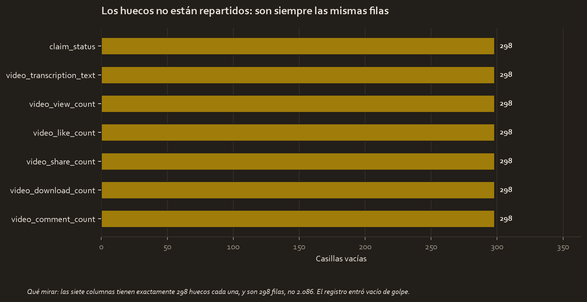

The brief
TikTok wants to reduce the queue of claims waiting for human review. The final goal, which arrives two courses later, is to classify automatically whether a video contains a claim or an opinion.
This is the previous step and the one that decides whether the rest makes sense: looking at the file.
The question
What is in this file, and does it say something on its own?
The data
tiktok_dataset_raw.csv, 19,382 videos and 12 columns: the claim status, the transcription, the duration, the verification status and the author's, and five interaction counters.
No duplicates. The types arrive fine: no numeric column stored as text.
What had to be fixed

298 incomplete rows, 1.54%. And the distribution of the gaps is the interesting part: they affect seven columns, always the same ones, and those 298 rows are missing all seven at once.
That rules out a column-by-column measurement failure and points to a record created empty or an interrupted load. Being few and all behaving the same, they can be removed while declaring it. 19,084 complete rows remain.
What the exploration showed
| Videos | Mean views | Median | |
|---|---|---|---|
| With a claim | 9,608 | 501,029.5 | 501,555 |
| Opinion | 9,476 | 4,956.4 | 4,953 |
A video with a claim is viewed 101.1 times more than an opinion one. And the drawing shows something the ratio does not say: on a logarithmic scale, the two mountains do not overlap. It is not a distribution with a long tail, they are two distinct populations of videos.
No statistical test was needed to see it. It was in the distribution.
And a lesson about the interquartile range criterion, applied column by column:
| Column | Candidates | % |
|---|---|---|
| Views | 0 | 0.00 |
| Likes | 1,726 | 9.04 |
| Shares | 2,508 | 13.14 |
| Downloads | 2,450 | 12.84 |
| Comments | 2,789 | 14.61 |
The column with the most extreme values in the file flags not a single candidate. Its upper quartile is at 504,327, so the upper fence goes to 1,253,404, above the real maximum. When the central half of the data is already enormous, the rule has nothing to point at.
The result, translated
The file is clean in everything else, and it is worth saying so with the same clarity with which the problems are said:
- No duplicates.
- No impossible values: no negative views, no video with more likes than views, no duration outside 1 to 60 seconds.
- The categories are written a single way, with no variants of capitalisation or trailing spaces.
What gets decided with this
- Remove the 298 incomplete rows, leaving written that they are 1.54% and that they were missing all seven columns at once.
- Treat the claim as the central variable of the file. There is no need to look for it: the distribution points it out on its own, and it is what the following courses try to predict.
- Do not use the IQR rule on the views. With that spread it flags nothing; the useful criterion is by bands or on a logarithmic scale.
Limitations
- The data is synthetic, created by TikTok for the certificate.
- The 101-times difference is descriptive. Nothing has been tested here and it has not been checked whether another variable explains it. That is work for the following courses.
- Nothing has been corrected here: this work counts and describes.
Full material
These three projects were built here. The CSVs are read from your course folder without touching them, and everything else is new.
Reports and notes
- executive_summary.md 04_reports/executive_summary.md 3.1 KB
- model_results.json 04_reports/model_results.json 2.1 KB
Code
- tiktok_eda.py 02_scripts/tiktok_eda.py 9.7 KB